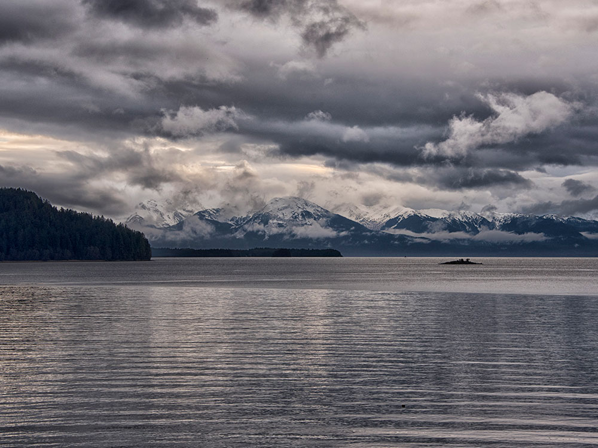
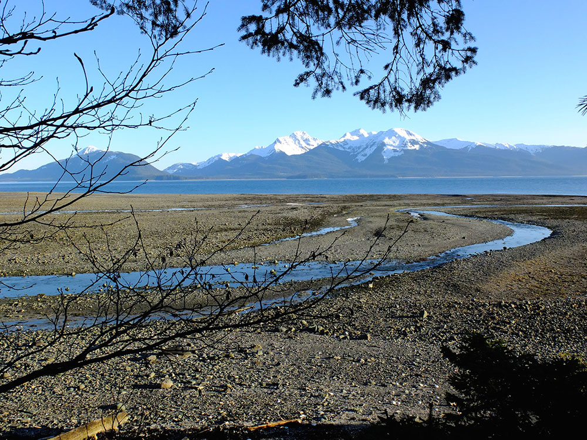

.jpg){kind=link}
Remote, rugged wilderness of dense temperate rainforest, alpine terrain, and waterways that supports one of the highest concentrations of brown bears and bald eagles on Earth.
Access is primarily by boat or floatplane
Special use permits required for certain areas such as Pack Creek bear viewing (approx. $60 per person)
Summer (June–August) offers peak bear and salmon activity
How to Get There
From Juneau (approx. 20 mi): Arrange a floatplane or boat transfer from Juneau across Stephens Passage, as there are no roads to the island, with most visitors landing near Pack Creek or other designated wilderness access points.
Overview
Rising from the misty waters of Southeast Alaska’s Inside Passage, Admiralty Island National Monument is a vast, untamed landscape defined by old-growth rainforest, glacier-carved peaks, and a labyrinth of rivers and estuaries. Encompassing nearly one million acres within Tongass National Forest, the island is renowned for harboring the densest population of brown bears on the planet, with an estimated 1,500 to 1,600 bears roaming freely across its valleys and shorelines. Known to the Tlingít people as Kootznoowoo, or “Fortress of the Bear,” the island is equally rich in cultural heritage and ecological importance, offering visitors a rare glimpse into one of the last truly wild ecosystems in North America.
Adventure on the island is both raw and immersive, with opportunities for kayaking along remote fjords, trekking through moss-draped forests, and observing wildlife in its natural habitat. The famed Pack Creek Bear Viewing Area draws visitors from around the world, where carefully managed access allows for intimate and respectful encounters with feeding bears during the salmon runs of summer. Beyond its iconic wildlife, the landscape is alive with bald eagles, marine mammals, and lush vegetation sustained by abundant rainfall, creating a dynamic environment that feels both humbling and exhilarating. With limited infrastructure and strict preservation measures, the island rewards prepared travelers with an unforgettable wilderness experience.
Things to Do
Explore the Fortress of the Bear
Admiralty Island is one of the largest islands in Southeast Alaska and is home to Admiralty Island National Monument within the Tongass National Forest. Known to the Tlingit people as "Kootznoowoo," meaning "Fortress of the Bear," the island is celebrated for its pristine temperate rainforest, rugged mountains, countless lakes and streams, rich Native heritage, and exceptional wildlife viewing opportunities.
Visit the Famous Pack Creek Bear Viewing Area
Pack Creek is one of Alaska's premier brown bear viewing destinations. Visitors travel by floatplane or boat from Juneau to observe brown bears feeding on salmon and foraging along streams and meadows. Managed viewing programs help ensure both visitor safety and wildlife protection while providing remarkable opportunities to observe bears in their natural habitat.
View World-Class Wildlife
Admiralty Island supports one of the highest densities of brown bears in North America. The island is also home to Sitka black-tailed deer, harbor seals, sea lions, porpoises, humpback whales, and thousands of bald eagles. Wildlife viewing opportunities exist throughout the island's forests, coastlines, and waterways.
Paddle the Cross-Admiralty Canoe Route
One of the island's most unique adventures is the Cross-Admiralty Canoe Route, a 32-mile network connecting eight major lakes and seven portages. This multi-day paddling route allows visitors to travel through remote wilderness landscapes while experiencing old-growth forests, wildlife habitat, and secluded waterways.
Go Kayaking in Seymour Canal
Seymour Canal is a popular destination for sea kayaking and wildlife viewing. Paddlers can explore protected waters while observing whales, seals, eagles, and coastal scenery. The canal also provides access to several remote cabins and camping locations throughout Admiralty Island National Monument.
Fish in Pristine Alaska Waters
The island's rivers, lakes, and surrounding marine waters provide excellent fishing opportunities. Salmon runs support healthy populations of wildlife and attract anglers seeking several species of Pacific salmon, while nearby marine waters offer opportunities for halibut and other sportfish.
Stay in Remote Forest Service Cabins
Numerous public-use Forest Service cabins are located throughout the island. Many are situated on remote lakes or along the Cross-Admiralty Canoe Route, providing comfortable wilderness accommodations for fishing, kayaking, hiking, and wildlife viewing adventures.
Learn About Tlingit Culture in Angoon
Angoon, the island's only community, is a traditional Tlingit village with deep cultural ties to Admiralty Island. Visitors can learn about Native history, cultural traditions, subsistence practices, and the importance of the island to Southeast Alaska's Indigenous communities.
Top Trails
Pack Creek Bear Viewing Trail
Length: Approximately 1 mile one way
Elevation Gain: Minimal
Difficulty: Easy
This well-known trail leads from the arrival area to observation points overlooking Pack Creek. Visitors can safely observe brown bears in one of Alaska's most famous wildlife viewing locations while learning about bear behavior and habitat conservation.
Cross-Admiralty Canoe Route Portage Trails
Length: Multiple portage segments
Elevation Gain: Minimal to Moderate
Difficulty: Moderate
A series of trails connect the lakes of the Cross-Admiralty Canoe Route. These portages allow paddlers to traverse the island while experiencing old-growth rainforest, wetlands, and opportunities for wildlife viewing.
Mole Harbor and Seymour Canal Shore Routes
Length: Variable
Elevation Gain: Minimal
Difficulty: Easy to Moderate
Shoreline routes around Mole Harbor and Seymour Canal provide opportunities for hiking, beach exploration, photography, and marine wildlife observation. Visitors frequently encounter eagles, seals, and spectacular views of the surrounding wilderness.
This article uses material from the Wikipedia article and official pages for Travel Alaska - Admiralty Island National Monument, Admiralty Island National Monument, released under the Creative Commons Attribution-Share-Alike License 3.0.



.jpg){kind=link}